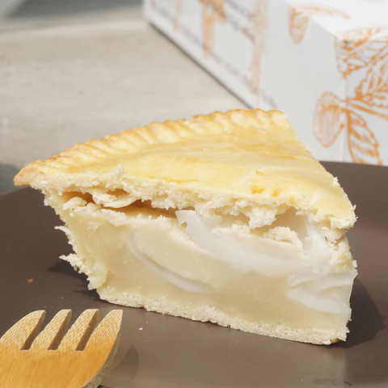
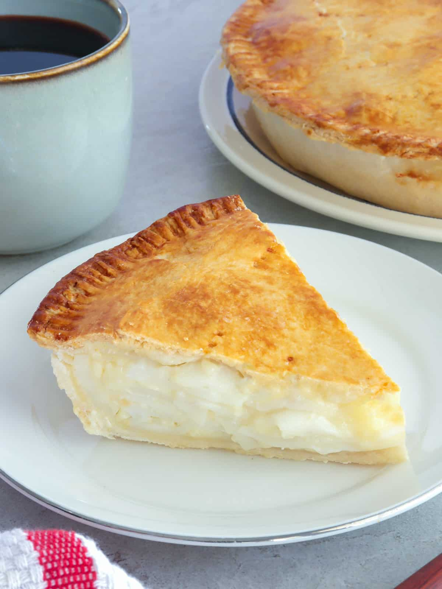
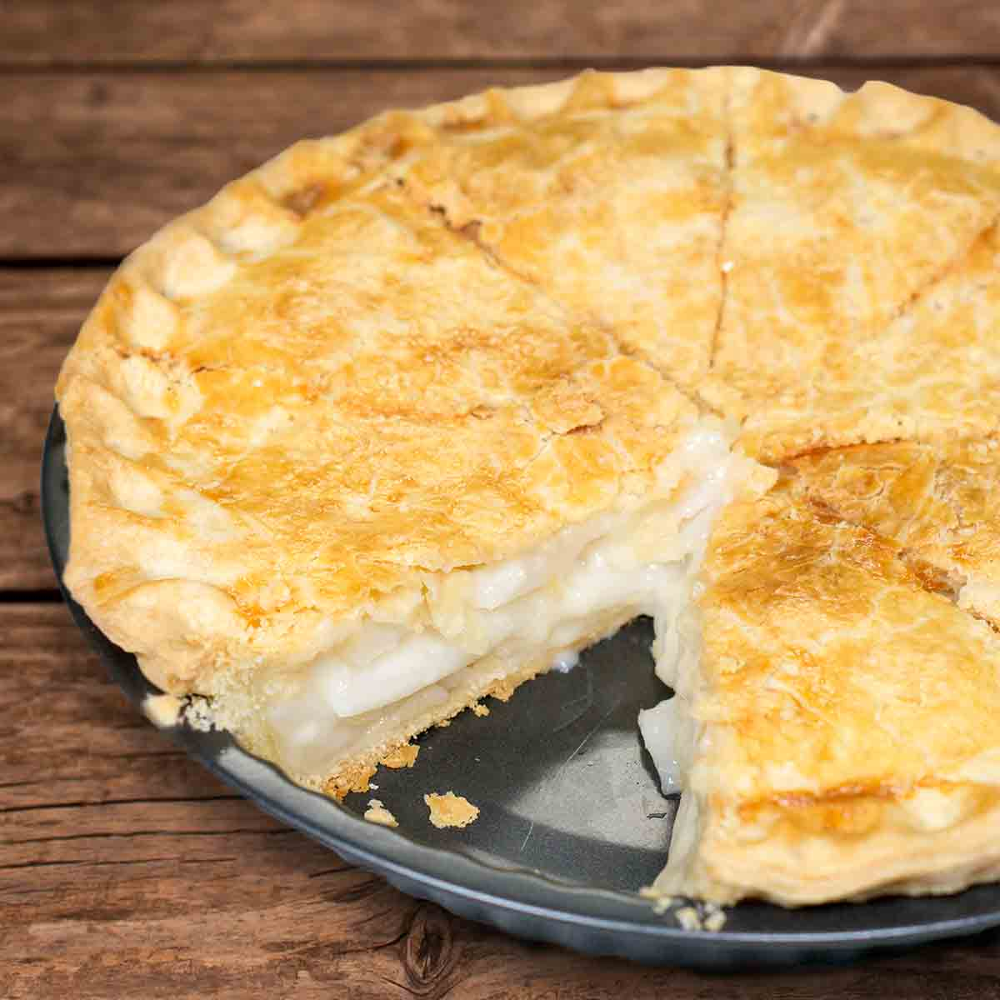
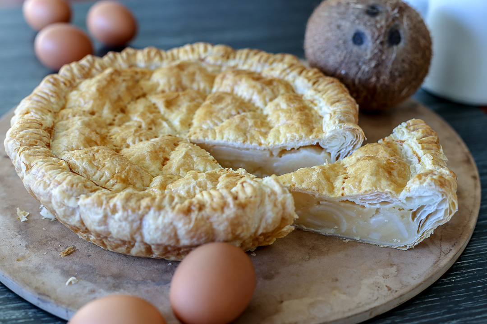
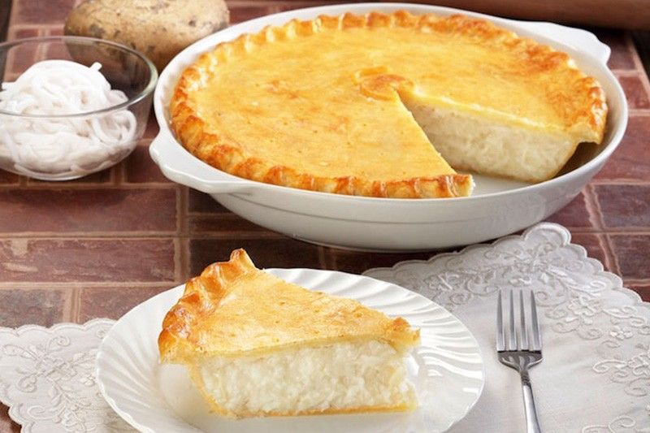

Buko Pie





History
Ang Buko Pie ay isa sa pinaka-iconic na Filipino desserts na nagmula sa Los Baños. Sumikat ito noong 1960s nang ang Soledad Pahud at ang kanyang pamilya ay nag-introduce ng coconut pie na inspired sa American apple pie. Sa halip na mansanas, ginamit nila ang fresh young coconut o buko, na mas abundant sa Pilipinas. Dahil sa kakaibang lasa at pagiging uniquely Filipino, mabilis itong naging paboritong pasalubong lalo na sa mga biyahero. Hanggang ngayon, ang Buko Pie ay simbolo ng Filipino innovation—isang dish na hango sa foreign influence pero ginawang sariling atin.
Ingredients & Notes
All-purpose flour
Sugar
Butter or margarine
Fresh young coconut
Evaporated or condensed milk
Cornstarch
Vanilla extract
Price
₱20